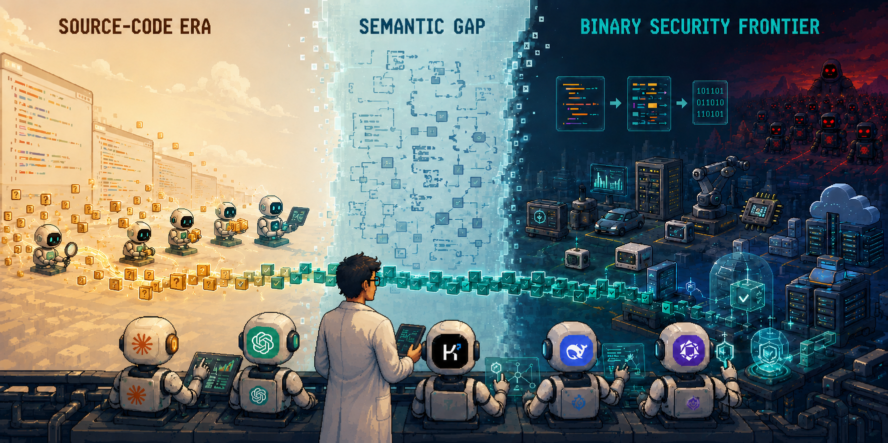

Tiantai Zhang
BioTiantai Zhang is a Ph.D. student in the Department of Computer Science at Nanjing University, advised by Prof. Bing Mao (since September 2021). He is currently a Visiting Scholar at Purdue University, working with Prof. Xiangyu Zhang. His work spans reverse engineering, binary defense, and the application of large language models to binary security analysis. He has published at top venues including USENIX Security, ISSTA, and TOSEM. Before his Ph.D., he received his B.E. in Communication Engineering from Xi'an University of Posts and Telecommunications (2017–2021). What I'm Working OnMy current work asks how we can reason reliably about imperfect binaries and build practical protections whose security guarantees survive real-world compilation. Audit & Validation
How can AI-assisted binary auditing move from plausible findings to verifiable security evidence?
Exploring how to move from plausible vulnerability findings to conclusions that can be checked against real program behavior.
Decompilation & AI
How do decompilation challenges affect model-based binary bug detection?
Using decompilation results to study which lost, distorted, or recovered program properties matter when models search binaries for bugs.
Defense & Optimization
Can compiler and runtime defenses remain secure and practical under optimization?
Investigating protections for security-sensitive program data while studying how compiler transformations affect their effectiveness, guarantees, and cost.
Updated July 2026  Research DirectionsBinary Analysis & Reverse Engineering
guided by Dr. Chengbin Pang
where my research journey began
Binary Defense
introduced to this direction by Dr. Chengbin Pang
my first step in broadening my research
LLM-Based Binary Security
introduced to this direction by Prof. Xiangyu Zhang and Chengpeng Wang
my second step in that exploration
Publications
Awards — things that happened, things that mattered.
Algorithm & Competitive Programming · team 🍬 I Love Candy w/ Wenfeng Huang & Chenlei Yang
z472421519
1🥈 6🥉 4🏳️
|